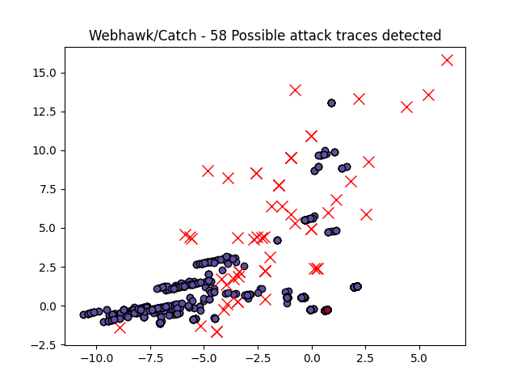

Webhawk Catch ReportUnsupervised learning Web logs/OS processes attack detection. Date: 23/06/25 at 09:28:40 GMTLog file: ./SAMPLE_DATA/RAW_APACHE_LOGS/access.log.2025-05-23 Log type: apache logs Findings: 242 |
 |
| Severity | Related CVE(s) | Line# | LLM Insights(llama3.2) | Log line |
| High | No CVE found | 68 | N/A | 51.222.253.8 - - [23/May/2025:00:37:05 -0700] "GET /self.logs/2016/error.log.2016-03-01.gz HTTP/1.1" 304 316 "-" "Mozilla/5.0 (compatible# AhrefsBot/7.0# +http://ahrefs.com/robot/)" |
| High | No CVE found | 72 | N/A | 43.130.57.46 - - [23/May/2025:00:40:17 -0700] "GET /honeypot/honeypot.json.zip HTTP/1.1" 429 449 "-" "Mozilla/5.0 (iPhone# CPU iPhone OS 13_2_3 like Mac OS X) AppleWebKit/605.1.15 (KHTML# like Gecko) Version/13.0.3 Mobile/15E148 Safari/604.1" |
| High | No CVE found | 149 | N/A | 51.222.253.16 - - [23/May/2025:01:04:57 -0700] "GET /self.logs/2016/access.log.2016-11-18.gz HTTP/1.1" 304 317 "-" "Mozilla/5.0 (compatible# AhrefsBot/7.0# +http://ahrefs.com/robot/)" |
| High | No CVE found | 501 | N/A | 54.157.99.244 - - [23/May/2025:02:29:01 -0700] "GET /honeypot/BSidesDFW%20-%202014.ipynb HTTP/1.1" 200 930884 "-" "Mozilla/5.0 AppleWebKit/537.36 (KHTML# like Gecko# compatible# Amazonbot/0.1# +https://developer.amazon.com/support/amazonbot) Chrome/119.0.6045.214 Safari/537.36" |
| High | No CVE found | 652 | N/A | 3.225.9.97 - - [23/May/2025:02:45:57 -0700] "GET /Datasets%20Description/PE_malware/VirusShare.html HTTP/1.1" 200 1614 "-" "Mozilla/5.0 AppleWebKit/537.36 (KHTML# like Gecko# compatible# Amazonbot/0.1# +https://developer.amazon.com/support/amazonbot) Chrome/119.0.6045.214 Safari/537.36" |
| High | No CVE found | 911 | N/A | 20.191.45.212 - - [23/May/2025:03:35:41 -0700] "GET /bootstrap/img/favicon.ico HTTP/1.1" 200 690 "http://www.secrepo.com/bootstrap/img/favicon.ico" "DuckDuckBot/1.1# (+http://duckduckgo.com/duckduckbot.html)" |
| High | No CVE found | 978 | N/A | 43.130.53.252 - - [23/May/2025:03:40:25 -0700] "GET /honeypot/Honeypot%20-%20Howto%20-%20BSides%20Austin.pdf HTTP/1.1" 200 720544 "-" "Mozilla/5.0 (iPhone# CPU iPhone OS 13_2_3 like Mac OS X) AppleWebKit/605.1.15 (KHTML# like Gecko) Version/13.0.3 Mobile/15E148 Safari/604.1" |
| High | No CVE found | 1269 | N/A | 40.77.167.123 - - [23/May/2025:04:39:15 -0700] "GET /self.logs/2016/access.log.2016-09-26.gz HTTP/1.1" 301 497 "-" "Mozilla/5.0 AppleWebKit/537.36 (KHTML# like Gecko# compatible# bingbot/2.0# +http://www.bing.com/bingbot.htm) Chrome/116.0.1938.76 Safari/537.36" |
| High | No CVE found | 1362 | N/A | 51.222.253.7 - - [23/May/2025:05:03:48 -0700] "GET /Datasets%20Description/?C=D#O=D HTTP/1.1" 200 629 "-" "Mozilla/5.0 (compatible# AhrefsBot/7.0# +http://ahrefs.com/robot/)" |
| High | No CVE found | 1400 | N/A | 34.231.45.47 - - [23/May/2025:05:06:20 -0700] "GET /Datasets%20Description/HTML_Bro_log_1 HTTP/1.1" 301 582 "-" "Mozilla/5.0 AppleWebKit/537.36 (KHTML# like Gecko# compatible# Amazonbot/0.1# +https://developer.amazon.com/support/amazonbot) Chrome/119.0.6045.214 Safari/537.36" |
| High | No CVE found | 1611 | N/A | 43.156.156.96 - - [23/May/2025:05:29:29 -0700] "GET /maccdc2012/maccdc2012_full_alert.7z HTTP/1.1" 429 439 "-" "Mozilla/5.0 (iPhone# CPU iPhone OS 13_2_3 like Mac OS X) AppleWebKit/605.1.15 (KHTML# like Gecko) Version/13.0.3 Mobile/15E148 Safari/604.1" |
| High | No CVE found | 1630 | N/A | 112.245.6.199 - - [23/May/2025:05:31:13 -0700] "GET /apple-touch-icon-120x120-precomposed.png HTTP/1.1" 404 328 "-" "Mozilla/5.0 (iPhone# CPU iPhone OS 18_5 like Mac OS X) AppleWebKit/605.1.15 (KHTML# like Gecko) Safari" |
| High | No CVE found | 1631 | N/A | 112.245.6.199 - - [23/May/2025:05:31:13 -0700] "GET /apple-touch-icon-120x120.png HTTP/1.1" 404 305 "-" "Mozilla/5.0 (iPhone# CPU iPhone OS 18_5 like Mac OS X) AppleWebKit/605.1.15 (KHTML# like Gecko) Safari" |
| High | No CVE found | 1632 | N/A | 112.245.6.199 - - [23/May/2025:05:31:14 -0700] "GET /apple-touch-icon-precomposed.png HTTP/1.1" 404 305 "-" "Mozilla/5.0 (iPhone# CPU iPhone OS 18_5 like Mac OS X) AppleWebKit/605.1.15 (KHTML# like Gecko) Safari" |
| High | No CVE found | 1635 | N/A | 112.245.6.199 - - [23/May/2025:05:31:15 -0700] "GET /bootstrap/img/favicon.ico HTTP/1.1" 200 690 "-" "Mozilla/5.0 (iPhone# CPU iPhone OS 18_5 like Mac OS X) AppleWebKit/605.1.15 (KHTML# like Gecko) Safari" |
| High | No CVE found | 1916 | N/A | 44.223.193.255 - - [23/May/2025:06:33:17 -0700] "GET /Datasets%20Description/HTML_Bro_log_3 HTTP/1.1" 301 582 "-" "Mozilla/5.0 AppleWebKit/537.36 (KHTML# like Gecko# compatible# Amazonbot/0.1# +https://developer.amazon.com/support/amazonbot) Chrome/119.0.6045.214 Safari/537.36" |
| High | No CVE found | 1949 | N/A | 43.167.239.66 - - [23/May/2025:06:35:20 -0700] "GET /Datasets%20Description/Network/smtp.html HTTP/1.1" 429 449 "-" "Mozilla/5.0 (iPhone# CPU iPhone OS 13_2_3 like Mac OS X) AppleWebKit/605.1.15 (KHTML# like Gecko) Version/13.0.3 Mobile/15E148 Safari/604.1" |
| High | No CVE found | 2015 | N/A | 49.51.33.159 - - [23/May/2025:06:47:35 -0700] "GET /Datasets%20Description/HTML_Bro_log_2 HTTP/1.1" 301 582 "-" "Mozilla/5.0 (iPhone# CPU iPhone OS 13_2_3 like Mac OS X) AppleWebKit/605.1.15 (KHTML# like Gecko) Version/13.0.3 Mobile/15E148 Safari/604.1" |
| High | No CVE found | 2018 | N/A | 49.51.33.159 - - [23/May/2025:06:47:41 -0700] "GET /Datasets%20Description/HTML_Bro_log_2/ HTTP/1.1" 200 795 "http://www.secrepo.com/Datasets%20Description/HTML_Bro_log_2" "Mozilla/5.0 (iPhone# CPU iPhone OS 13_2_3 like Mac OS X) AppleWebKit/605.1.15 (KHTML# like Gecko) Version/13.0.3 Mobile/15E148 Safari/604.1" |
| High | No CVE found | 2354 | N/A | 57.141.6.29 - - [23/May/2025:07:44:30 -0700] "GET /Datasets%20Description/HTML_Bro_log_1/loaded_scripts.html HTTP/1.1" 429 486 "-" "meta-externalagent/1.1 (+https://developers.facebook.com/docs/sharing/webmasters/crawler)" |
| High | No CVE found | 2448 | N/A | 43.157.142.101 - - [23/May/2025:08:12:23 -0700] "GET /Datasets%20Description/HTML_Bro_log_2/loaded_scripts.html HTTP/1.1" 429 449 "-" "Mozilla/5.0 (iPhone# CPU iPhone OS 13_2_3 like Mac OS X) AppleWebKit/605.1.15 (KHTML# like Gecko) Version/13.0.3 Mobile/15E148 Safari/604.1" |
| High | No CVE found | 2551 | N/A | 43.133.14.237 - - [23/May/2025:08:24:58 -0700] "GET /Datasets%20Description/HTML_Bro_log_2/?C=D#O=D HTTP/1.1" 429 449 "-" "Mozilla/5.0 (iPhone# CPU iPhone OS 13_2_3 like Mac OS X) AppleWebKit/605.1.15 (KHTML# like Gecko) Version/13.0.3 Mobile/15E148 Safari/604.1" |
| High | No CVE found | 2660 | N/A | 100.28.118.16 - - [23/May/2025:09:09:22 -0700] "GET /robots.txt HTTP/1.1" 200 340 "-" "Mozilla/5.0 AppleWebKit/537.36 (KHTML# like Gecko# compatible# Amazonbot/0.1# +https://developer.amazon.com/support/amazonbot) Chrome/119.0.6045.214 Safari/537.36" |
| High | No CVE found | 2771 | N/A | 51.222.253.13 - - [23/May/2025:09:17:55 -0700] "GET /Datasets%20Description/HTML_Bro_log_3/ HTTP/1.1" 200 779 "-" "Mozilla/5.0 (compatible# AhrefsBot/7.0# +http://ahrefs.com/robot/)" |
| High | No CVE found | 3022 | N/A | 107.22.208.39 - - [23/May/2025:09:55:15 -0700] "GET /Datasets%20Description/PE_malware/Zeus.html HTTP/1.1" 200 1661 "-" "Mozilla/5.0 AppleWebKit/537.36 (KHTML# like Gecko# compatible# Amazonbot/0.1# +https://developer.amazon.com/support/amazonbot) Chrome/119.0.6045.214 Safari/537.36" |
| High | No CVE found | 3291 | N/A | 44.221.105.234 - - [23/May/2025:10:27:52 -0700] "GET /Datasets%20Description/HTML_Bro_log_2 HTTP/1.1" 301 582 "-" "Mozilla/5.0 AppleWebKit/537.36 (KHTML# like Gecko# compatible# Amazonbot/0.1# +https://developer.amazon.com/support/amazonbot) Chrome/119.0.6045.214 Safari/537.36" |
| High | No CVE found | 3335 | N/A | 57.141.6.27 - - [23/May/2025:10:33:02 -0700] "GET /maccdc2012/maccdc2012_full_alert.7z HTTP/1.1" 429 487 "-" "meta-externalagent/1.1 (+https://developers.facebook.com/docs/sharing/webmasters/crawler)" |
| High | No CVE found | 3336 | N/A | 34.225.87.80 - - [23/May/2025:10:43:36 -0700] "GET /honeypot/ HTTP/1.1" 200 745 "-" "Mozilla/5.0 AppleWebKit/537.36 (KHTML# like Gecko# compatible# Amazonbot/0.1# +https://developer.amazon.com/support/amazonbot) Chrome/119.0.6045.214 Safari/537.36" |
| High | No CVE found | 3639 | N/A | 143.92.32.166 - - [23/May/2025:11:39:25 -0700] "GET /public/plugins/Ueditor/dialogs/attachment/fileTypeImages/icon_psd.gif HTTP/1.1" 429 476 "http://www.secrepo.com/public/plugins/Ueditor/dialogs/attachment/fileTypeImages/icon_psd.gif" "Mozilla/4.0 (compatible# MSIE 9.0# Windows NT 6.1)" |
| High | No CVE found | 3772 | N/A | 95.127.39.196 - - [23/May/2025:11:49:41 -0700] "GET /bootstrap/img/favicon.ico HTTP/1.1" 200 690 "http://www.secrepo.com/" "Mozilla/5.0 (Linux# Android 10# K) AppleWebKit/537.36 (KHTML# like Gecko) Chrome/136.0.0.0 Mobile Safari/537.36" |
| High | No CVE found | 3776 | N/A | 5.255.231.113 - - [23/May/2025:11:57:56 -0700] "GET /Datasets%20Description/HTML_Bro_log_2 HTTP/1.1" 301 619 "-" "Mozilla/5.0 (compatible# YandexBot/3.0# +http://yandex.com/bots)" |
| High | No CVE found | 3777 | N/A | 213.180.203.206 - - [23/May/2025:11:57:57 -0700] "GET /Datasets%20Description/HTML_Bro_log_2/ HTTP/1.1" 200 832 "-" "Mozilla/5.0 (compatible# YandexBot/3.0# +http://yandex.com/bots)" |
| High | No CVE found | 3966 | N/A | 23.20.178.124 - - [23/May/2025:12:29:22 -0700] "GET /robots.txt HTTP/1.1" 301 458 "-" "Mozilla/5.0 AppleWebKit/537.36 (KHTML# like Gecko# compatible# Amazonbot/0.1# +https://developer.amazon.com/support/amazonbot) Chrome/119.0.6045.214 Safari/537.36" |
| High | No CVE found | 3967 | N/A | 18.205.213.231 - - [23/May/2025:12:29:22 -0700] "GET /robots.txt HTTP/1.1" 200 340 "-" "Mozilla/5.0 AppleWebKit/537.36 (KHTML# like Gecko# compatible# Amazonbot/0.1# +https://developer.amazon.com/support/amazonbot) Chrome/119.0.6045.214 Safari/537.36" |
| High | No CVE found | 3973 | N/A | 18.205.127.11 - - [23/May/2025:12:29:44 -0700] "GET /honeypot/BSidesDFW%20-%202014.ipynb HTTP/1.1" 301 500 "-" "Mozilla/5.0 AppleWebKit/537.36 (KHTML# like Gecko# compatible# Amazonbot/0.1# +https://developer.amazon.com/support/amazonbot) Chrome/119.0.6045.214 Safari/537.36" |
| High | No CVE found | 3974 | N/A | 44.217.177.142 - - [23/May/2025:12:29:44 -0700] "GET /honeypot/BSidesDFW%20-%202014.ipynb HTTP/1.1" 200 930884 "-" "Mozilla/5.0 AppleWebKit/537.36 (KHTML# like Gecko# compatible# Amazonbot/0.1# +https://developer.amazon.com/support/amazonbot) Chrome/119.0.6045.214 Safari/537.36" |
| High | No CVE found | 4430 | N/A | 52.167.144.137 - - [23/May/2025:13:57:58 -0700] "GET /honeypot/Honeypot%20-%20Howto.pdf HTTP/1.1" 304 303 "-" "Mozilla/5.0 AppleWebKit/537.36 (KHTML# like Gecko# compatible# bingbot/2.0# +http://www.bing.com/bingbot.htm) Chrome/116.0.1938.76 Safari/537.36" |
| High | No CVE found | 5201 | N/A | 170.39.217.202 - - [23/May/2025:16:05:23 -0700] "GET /.git/HEAD HTTP/1.1" 301 493 "-" "-" |
| High | No CVE found | 5202 | N/A | 170.39.217.202 - - [23/May/2025:16:05:23 -0700] "GET /__MACOSX/.git/config HTTP/1.1" 301 515 "-" "Mozilla/5.0 (Windows NT 10.0# Win64# x64) AppleWebKit/537.36 (KHTML# like Gecko) Chrome/91.0.4472.124 Safari/537.36" |
| High | No CVE found | 5203 | N/A | 170.39.217.202 - - [23/May/2025:16:05:24 -0700] "GET /__MACOSX/.git/config HTTP/1.1" 429 476 "-" "Mozilla/5.0 (Windows NT 10.0# Win64# x64) AppleWebKit/537.36 (KHTML# like Gecko) Chrome/91.0.4472.124 Safari/537.36" |
| High | No CVE found | 5213 | N/A | 170.39.217.202 - - [23/May/2025:16:05:25 -0700] "GET /AWSconf.git/config HTTP/1.1" 429 485 "-" "Mozilla/5.0 (Windows NT 10.0# Win64# x64) AppleWebKit/537.36 (KHTML# like Gecko) Chrome/91.0.4472.124 Safari/537.36" |
| High | No CVE found | 5217 | N/A | 170.39.217.202 - - [23/May/2025:16:05:26 -0700] "GET /blog/wp-content/themes/.git/config HTTP/1.1" 429 485 "-" "Mozilla/5.0 (Windows NT 10.0# Win64# x64) AppleWebKit/537.36 (KHTML# like Gecko) Chrome/91.0.4472.124 Safari/537.36" |
| High | No CVE found | 5249 | N/A | 170.39.217.202 - - [23/May/2025:16:05:31 -0700] "GET /wp-content/plugins/.git/config HTTP/1.1" 429 485 "-" "Mozilla/5.0 (Windows NT 10.0# Win64# x64) AppleWebKit/537.36 (KHTML# like Gecko) Chrome/91.0.4472.124 Safari/537.36" |
| High | No CVE found | 5250 | N/A | 170.39.217.202 - - [23/May/2025:16:05:31 -0700] "GET /wp-content/themes/.git/config HTTP/1.1" 429 485 "-" "Mozilla/5.0 (Windows NT 10.0# Win64# x64) AppleWebKit/537.36 (KHTML# like Gecko) Chrome/91.0.4472.124 Safari/537.36" |
| High | No CVE found | 5251 | N/A | 170.39.217.202 - - [23/May/2025:16:05:31 -0700] "GET /wp-includes/js/.git/config HTTP/1.1" 429 485 "-" "Mozilla/5.0 (Windows NT 10.0# Win64# x64) AppleWebKit/537.36 (KHTML# like Gecko) Chrome/91.0.4472.124 Safari/537.36" |
| High | No CVE found | 5287 | N/A | 91.227.68.157 - - [23/May/2025:16:21:34 -0700] "HEAD / HTTP/1.0" 200 359 "-" "Mozilla/5.0 (Macintosh# Intel Mac OS X 10_15_7) AppleWebKit/537.43 (KHTML# like Gecko) Chrome/122.0.0.0 Safari/537.36 OPR/108.0.0.0" |
| High | No CVE found | 5291 | N/A | 91.227.68.157 - - [23/May/2025:16:21:43 -0700] "GET /admin/content/sitetree/ HTTP/1.1" 404 284 "-" "Mozilla/5.0 (Windows NT 6.2# Win64# x64) AppleWebKit/537.36 (KHTML# like Gecko) Chrome/128.0.0.0 YaBrowser/24.10.0.0 Safari/537.36" |
| High | No CVE found | 5744 | N/A | 70.188.93.180 - - [23/May/2025:20:57:31 -0700] "GET /apple-touch-icon-precomposed.png HTTP/1.1" 404 328 "-" "NetworkingExtension/8621.2.5.10.10 Network/4277.122.6 iOS/18.5" |
| High | No CVE found | 5780 | N/A | 149.56.150.193 - - [23/May/2025:21:34:57 -0700] "GET /.well-known/security.txt HTTP/1.1" 404 305 "-" "Mozilla/5.0 (compatible# Dataprovider.com)" |
| High | No CVE found | 5819 | N/A | 3.221.156.96 - - [23/May/2025:21:46:15 -0700] "GET /Datasets%20Description/HTML_Bro_log_2/?C=M#O%3DA HTTP/1.1" 200 795 "-" "Mozilla/5.0 AppleWebKit/537.36 (KHTML# like Gecko# compatible# Amazonbot/0.1# +https://developer.amazon.com/support/amazonbot) Chrome/119.0.6045.214 Safari/537.36" |
| High | No CVE found | 5849 | N/A | 66.212.18.223 - - [23/May/2025:22:18:17 -0700] "GET /App/Manage/Public/plugins/jquery-file-upload/server/php/UploadHandler.php HTTP/1.1" 404 328 "-" "Mozilla/5.0 (Macintosh# Intel Mac OS X 10_13_6) AppleWebKit/537.36 (KHTML# like Gecko) Chrome/69.0.3497.81 Safari/537.36" |
| High | No CVE found | 5850 | N/A | 66.212.18.223 - - [23/May/2025:22:18:18 -0700] "GET /App/Manage/Public/plugins/jquery-file-upload/server/php/index.php HTTP/1.1" 404 328 "-" "Mozilla/5.0 (Macintosh# Intel Mac OS X 10_13_6) AppleWebKit/537.36 (KHTML# like Gecko) Chrome/69.0.3497.81 Safari/537.36" |
| High | No CVE found | 5887 | N/A | 168.138.184.218 - - [23/May/2025:22:40:10 -0700] "GET /config/application.config.php HTTP/1.1" 404 250 "-" "Mozilla/5.0 (Macintosh# Intel Mac OS X 10_15_7) AppleWebKit/537.36 (KHTML# like Gecko) Chrome/120.0.0.0 Safari/537.36" |
| High | No CVE found | 5901 | N/A | 168.138.184.218 - - [23/May/2025:22:40:25 -0700] "GET /api/shared/config/config.env HTTP/1.1" 404 284 "-" "Mozilla/5.0 (Windows NT 10.0# Win64# x64) AppleWebKit/537.36 (KHTML# like Gecko) Chrome/120.0.0.0 Safari/537.36" |
| High | No CVE found | 5925 | N/A | 168.138.184.218 - - [23/May/2025:22:40:42 -0700] "GET /.AWS_/credentials HTTP/1.1" 404 250 "-" "Mozilla/5.0 (Macintosh# Intel Mac OS X 10_15_7) AppleWebKit/537.36 (KHTML# like Gecko) Chrome/120.0.0.0 Safari/537.36" |
| High | No CVE found | 6000 | N/A | 168.138.184.218 - - [23/May/2025:22:41:32 -0700] "GET //html5shim.googlecode.com/svn/trunk/html5.js HTTP/1.1" 404 284 "-" "Mozilla/5.0 (Windows NT 10.0# Win64# x64) AppleWebKit/537.36 (KHTML# like Gecko) Chrome/120.0.0.0 Safari/537.36" |
| High | No CVE found | 6126 | N/A | 220.181.108.111 - - [24/May/2025:00:02:41 -0700] "GET /self.logs/2016/ HTTP/1.1" 200 7823 "-" "Mozilla/5.0 (compatible# Baiduspider/2.0# +http://www.baidu.com/search/spider.html)" |
| High | No CVE found | 6132 | N/A | 44.218.170.184 - - [24/May/2025:00:19:12 -0700] "GET /Datasets%20Description/HTML_Bro_log_3/packet_filter.html HTTP/1.1" 200 1688 "-" "Mozilla/5.0 AppleWebKit/537.36 (KHTML# like Gecko# compatible# Amazonbot/0.1# +https://developer.amazon.com/support/amazonbot) Chrome/119.0.6045.214 Safari/537.36" |
| Medium | No CVE found | 590 | N/A | 18.215.24.66 - - [23/May/2025:02:34:59 -0700] "GET /self.logs/?C=M#O%3DA HTTP/1.1" 200 58871 "-" "Mozilla/5.0 AppleWebKit/537.36 (KHTML# like Gecko# compatible# Amazonbot/0.1# +https://developer.amazon.com/support/amazonbot) Chrome/119.0.6045.214 Safari/537.36" |
| Medium | No CVE found | 977 | N/A | 34.193.2.57 - - [23/May/2025:03:40:08 -0700] "GET /self.logs/?C=D#O%3DA HTTP/1.1" 200 56675 "-" "Mozilla/5.0 AppleWebKit/537.36 (KHTML# like Gecko# compatible# Amazonbot/0.1# +https://developer.amazon.com/support/amazonbot) Chrome/119.0.6045.214 Safari/537.36" |
| Medium | No CVE found | 1778 | N/A | 98.83.177.42 - - [23/May/2025:06:02:15 -0700] "GET /self.logs/?C=S#O%3DA HTTP/1.1" 200 69066 "-" "Mozilla/5.0 AppleWebKit/537.36 (KHTML# like Gecko# compatible# Amazonbot/0.1# +https://developer.amazon.com/support/amazonbot) Chrome/119.0.6045.214 Safari/537.36" |
| Medium | No CVE found | 2650 | N/A | 54.225.81.20 - - [23/May/2025:08:46:52 -0700] "GET /self.logs/?C=N#O%3DD HTTP/1.1" 200 56695 "-" "Mozilla/5.0 AppleWebKit/537.36 (KHTML# like Gecko# compatible# Amazonbot/0.1# +https://developer.amazon.com/support/amazonbot) Chrome/119.0.6045.214 Safari/537.36" |
| Medium | No CVE found | 6158 | N/A | 44.206.65.8 - - [24/May/2025:00:20:59 -0700] "GET /self.logs/?C=M#O%3DD HTTP/1.1" 200 58892 "-" "Mozilla/5.0 AppleWebKit/537.36 (KHTML# like Gecko# compatible# Amazonbot/0.1# +https://developer.amazon.com/support/amazonbot) Chrome/119.0.6045.214 Safari/537.36" |
| Medium | No CVE found | 892 | N/A | 223.111.157.108 - - [23/May/2025:03:27:21 -0700] "GET /twitter-icon.png HTTP/1.1" 200 27916 "http://www.secrepo.com/" "Mozilla/5.0 (iPhone# CPU iPhone OS 13_2_3 like Mac OS X) AppleWebKit/605.1.15 (KHTML# like Gecko) Version/13.0.3 Mobile/15E148 Safari/604.1 Edg/114.0.0.0" |
| Medium | No CVE found | 896 | N/A | 223.111.157.108 - - [23/May/2025:03:29:06 -0700] "GET /twitter-icon.png HTTP/1.1" 206 450 "http://www.secrepo.com/" "Mozilla/5.0 (iPhone# CPU iPhone OS 13_2_3 like Mac OS X) AppleWebKit/605.1.15 (KHTML# like Gecko) Version/13.0.3 Mobile/15E148 Safari/604.1 Edg/114.0.0.0" |
| Medium | No CVE found | 897 | N/A | 223.111.157.108 - - [23/May/2025:03:29:07 -0700] "GET /twitter-icon.png HTTP/1.1" 206 14546 "http://www.secrepo.com/" "Mozilla/5.0 (iPhone# CPU iPhone OS 13_2_3 like Mac OS X) AppleWebKit/605.1.15 (KHTML# like Gecko) Version/13.0.3 Mobile/15E148 Safari/604.1 Edg/114.0.0.0" |
| Medium | No CVE found | 902 | N/A | 223.111.157.108 - - [23/May/2025:03:29:43 -0700] "GET /twitter-icon.png HTTP/1.1" 200 27916 "http://www.secrepo.com/" "Mozilla/5.0 (Linux# Android 6.0# Nexus 5 Build/MRA58N) AppleWebKit/537.36 (KHTML# like Gecko) Chrome/113.0.0.0 Mobile Safari/537.36 Edg/113.0.1774.50" |
| Medium | No CVE found | 3770 | N/A | 95.127.39.196 - - [23/May/2025:11:49:38 -0700] "GET /twitter-icon.png HTTP/1.1" 200 27893 "http://www.secrepo.com/" "Mozilla/5.0 (Linux# Android 10# K) AppleWebKit/537.36 (KHTML# like Gecko) Chrome/136.0.0.0 Mobile Safari/537.36" |
| Medium | No CVE found | 5787 | N/A | 149.56.150.19 - - [23/May/2025:21:35:19 -0700] "GET /twitter-icon.png HTTP/1.1" 200 27916 "http://www.secrepo.com/" "Mozilla/5.0 (compatible# Dataprovider.com)" |
| Medium | No CVE found | 1401 | N/A | 44.223.232.55 - - [23/May/2025:05:06:20 -0700] "GET /Datasets%20Description/HTML_Bro_log_1/ HTTP/1.1" 200 797 "-" "Mozilla/5.0 AppleWebKit/537.36 (KHTML# like Gecko# compatible# Amazonbot/0.1# +https://developer.amazon.com/support/amazonbot) Chrome/119.0.6045.214 Safari/537.36" |
| Medium | No CVE found | 1917 | N/A | 3.220.70.171 - - [23/May/2025:06:33:17 -0700] "GET /Datasets%20Description/HTML_Bro_log_3/ HTTP/1.1" 200 786 "-" "Mozilla/5.0 AppleWebKit/537.36 (KHTML# like Gecko# compatible# Amazonbot/0.1# +https://developer.amazon.com/support/amazonbot) Chrome/119.0.6045.214 Safari/537.36" |
| Medium | No CVE found | 3292 | N/A | 23.21.148.226 - - [23/May/2025:10:27:52 -0700] "GET /Datasets%20Description/HTML_Bro_log_2/ HTTP/1.1" 200 795 "-" "Mozilla/5.0 AppleWebKit/537.36 (KHTML# like Gecko# compatible# Amazonbot/0.1# +https://developer.amazon.com/support/amazonbot) Chrome/119.0.6045.214 Safari/537.36" |
| Medium | No CVE found | 4714 | N/A | 51.222.253.17 - - [23/May/2025:14:55:25 -0700] "GET /Datasets%20Description/Network/?C=D#O=A HTTP/1.1" 200 725 "-" "Mozilla/5.0 (compatible# AhrefsBot/7.0# +http://ahrefs.com/robot/)" |
| Medium | No CVE found | 4777 | N/A | 51.222.253.10 - - [23/May/2025:15:22:53 -0700] "GET /Datasets%20Description/Network/?C=M#O=A HTTP/1.1" 200 725 "-" "Mozilla/5.0 (compatible# AhrefsBot/7.0# +http://ahrefs.com/robot/)" |
| Medium | No CVE found | 5708 | N/A | 51.222.253.19 - - [23/May/2025:20:04:04 -0700] "GET /Datasets%20Description/Network/?C=S#O=A HTTP/1.1" 200 722 "-" "Mozilla/5.0 (compatible# AhrefsBot/7.0# +http://ahrefs.com/robot/)" |
| Medium | No CVE found | 3500 | N/A | 52.54.157.23 - - [23/May/2025:11:21:36 -0700] "GET /Datasets%20Description/PE_malware/OPCleaver.html HTTP/1.1" 200 1421 "-" "Mozilla/5.0 AppleWebKit/537.36 (KHTML# like Gecko# compatible# Amazonbot/0.1# +https://developer.amazon.com/support/amazonbot) Chrome/119.0.6045.214 Safari/537.36" |
| Medium | No CVE found | 5759 | N/A | 52.23.112.144 - - [23/May/2025:21:18:51 -0700] "GET /Datasets%20Description/HTML_Bro_log_3/dns.html HTTP/1.1" 200 1793 "-" "Mozilla/5.0 AppleWebKit/537.36 (KHTML# like Gecko# compatible# Amazonbot/0.1# +https://developer.amazon.com/support/amazonbot) Chrome/119.0.6045.214 Safari/537.36" |
| Medium | No CVE found | 5832 | N/A | 184.73.239.35 - - [23/May/2025:22:14:47 -0700] "GET /Datasets%20Description/HTML_Bro_log_2/irc.html HTTP/1.1" 200 1734 "-" "Mozilla/5.0 AppleWebKit/537.36 (KHTML# like Gecko# compatible# Amazonbot/0.1# +https://developer.amazon.com/support/amazonbot) Chrome/119.0.6045.214 Safari/537.36" |
| Medium | No CVE found | 6006 | N/A | 98.83.226.125 - - [23/May/2025:22:54:12 -0700] "GET /Datasets%20Description/HTML_Bro_log_1/dns.html HTTP/1.1" 200 1800 "-" "Mozilla/5.0 AppleWebKit/537.36 (KHTML# like Gecko# compatible# Amazonbot/0.1# +https://developer.amazon.com/support/amazonbot) Chrome/119.0.6045.214 Safari/537.36" |
| Medium | No CVE found | 6050 | N/A | 18.215.49.176 - - [23/May/2025:23:10:19 -0700] "GET /Datasets%20Description/HTML_Bro_log_1/files.html HTTP/1.1" 200 1881 "-" "Mozilla/5.0 AppleWebKit/537.36 (KHTML# like Gecko# compatible# Amazonbot/0.1# +https://developer.amazon.com/support/amazonbot) Chrome/119.0.6045.214 Safari/537.36" |
| Medium | No CVE found | 6079 | N/A | 52.3.26.180 - - [23/May/2025:23:43:15 -0700] "GET /Datasets%20Description/HTML_Bro_log_2/dpd.html HTTP/1.1" 200 1618 "-" "Mozilla/5.0 AppleWebKit/537.36 (KHTML# like Gecko# compatible# Amazonbot/0.1# +https://developer.amazon.com/support/amazonbot) Chrome/119.0.6045.214 Safari/537.36" |
| Medium | No CVE found | 592 | N/A | 51.222.253.3 - - [23/May/2025:02:40:54 -0700] "GET /Datasets%20Description/HTML_Bro_log_2/?C=D#O=D HTTP/1.1" 200 788 "-" "Mozilla/5.0 (compatible# AhrefsBot/7.0# +http://ahrefs.com/robot/)" |
| Medium | No CVE found | 2258 | N/A | 43.165.65.75 - - [23/May/2025:07:31:33 -0700] "GET /Datasets%20Description/HTML_Bro_log_2/?C=D#O=A HTTP/1.1" 200 795 "-" "Mozilla/5.0 (iPhone# CPU iPhone OS 13_2_3 like Mac OS X) AppleWebKit/605.1.15 (KHTML# like Gecko) Version/13.0.3 Mobile/15E148 Safari/604.1" |
| Medium | No CVE found | 2550 | N/A | 52.167.144.211 - - [23/May/2025:08:21:20 -0700] "GET /Datasets%20Description/HTML_Bro_log_1/?C=S#O=D HTTP/1.1" 200 785 "-" "Mozilla/5.0 AppleWebKit/537.36 (KHTML# like Gecko# compatible# bingbot/2.0# +http://www.bing.com/bingbot.htm) Chrome/116.0.1938.76 Safari/537.36" |
| Medium | No CVE found | 3932 | N/A | 51.222.253.17 - - [23/May/2025:12:19:57 -0700] "GET /Datasets%20Description/HTML_Bro_log_3/?C=N#O=A HTTP/1.1" 200 779 "-" "Mozilla/5.0 (compatible# AhrefsBot/7.0# +http://ahrefs.com/robot/)" |
| Medium | No CVE found | 4086 | N/A | 51.222.253.11 - - [23/May/2025:12:51:45 -0700] "GET /Datasets%20Description/HTML_Bro_log_2/?C=N#O=A HTTP/1.1" 200 788 "-" "Mozilla/5.0 (compatible# AhrefsBot/7.0# +http://ahrefs.com/robot/)" |
| Medium | No CVE found | 6049 | N/A | 51.222.253.14 - - [23/May/2025:23:09:39 -0700] "GET /Datasets%20Description/HTML_Bro_log_1/?C=S#O=A HTTP/1.1" 200 783 "-" "Mozilla/5.0 (compatible# AhrefsBot/7.0# +http://ahrefs.com/robot/)" |
| Medium | No CVE found | 6129 | N/A | 51.222.253.14 - - [24/May/2025:00:17:03 -0700] "GET /Datasets%20Description/HTML_Bro_log_1/?C=M#O=A HTTP/1.1" 200 790 "-" "Mozilla/5.0 (compatible# AhrefsBot/7.0# +http://ahrefs.com/robot/)" |
| Medium | No CVE found | 593 | N/A | 52.207.47.227 - - [23/May/2025:02:42:13 -0700] "GET /Datasets%20Description/Network/tunnel.html HTTP/1.1" 200 1433 "-" "Mozilla/5.0 AppleWebKit/537.36 (KHTML# like Gecko# compatible# Amazonbot/0.1# +https://developer.amazon.com/support/amazonbot) Chrome/119.0.6045.214 Safari/537.36" |
| Medium | No CVE found | 914 | N/A | 23.23.213.182 - - [23/May/2025:03:36:16 -0700] "GET /Datasets%20Description/Network/weird.html HTTP/1.1" 200 1608 "-" "Mozilla/5.0 AppleWebKit/537.36 (KHTML# like Gecko# compatible# Amazonbot/0.1# +https://developer.amazon.com/support/amazonbot) Chrome/119.0.6045.214 Safari/537.36" |
| Medium | No CVE found | 1471 | N/A | 98.82.66.172 - - [23/May/2025:05:20:12 -0700] "GET /Datasets%20Description/Network/dhcp.html HTTP/1.1" 200 1424 "-" "Mozilla/5.0 AppleWebKit/537.36 (KHTML# like Gecko# compatible# Amazonbot/0.1# +https://developer.amazon.com/support/amazonbot) Chrome/119.0.6045.214 Safari/537.36" |
| Medium | No CVE found | 2355 | N/A | 54.91.122.193 - - [23/May/2025:07:45:16 -0700] "GET /Datasets%20Description/Network/ftp.html HTTP/1.1" 200 1493 "-" "Mozilla/5.0 AppleWebKit/537.36 (KHTML# like Gecko# compatible# Amazonbot/0.1# +https://developer.amazon.com/support/amazonbot) Chrome/119.0.6045.214 Safari/537.36" |
| Medium | No CVE found | 2776 | N/A | 34.227.156.153 - - [23/May/2025:09:26:01 -0700] "GET /Datasets%20Description/Network/dns.html HTTP/1.1" 200 1506 "-" "Mozilla/5.0 AppleWebKit/537.36 (KHTML# like Gecko# compatible# Amazonbot/0.1# +https://developer.amazon.com/support/amazonbot) Chrome/119.0.6045.214 Safari/537.36" |
| Medium | No CVE found | 3118 | N/A | 54.83.56.1 - - [23/May/2025:10:11:55 -0700] "GET /Datasets%20Description/Network/notice.html HTTP/1.1" 200 1613 "-" "Mozilla/5.0 AppleWebKit/537.36 (KHTML# like Gecko# compatible# Amazonbot/0.1# +https://developer.amazon.com/support/amazonbot) Chrome/119.0.6045.214 Safari/537.36" |
| Medium | No CVE found | 3613 | N/A | 3.208.146.193 - - [23/May/2025:11:37:44 -0700] "GET /Datasets%20Description/Network/ssl.html HTTP/1.1" 200 1548 "-" "Mozilla/5.0 AppleWebKit/537.36 (KHTML# like Gecko# compatible# Amazonbot/0.1# +https://developer.amazon.com/support/amazonbot) Chrome/119.0.6045.214 Safari/537.36" |
| Medium | No CVE found | 314 | N/A | 51.222.253.16 - - [23/May/2025:01:29:41 -0700] "GET /Datasets%20Description/HTML_Bro_log_1/app_stats.html HTTP/1.1" 200 1547 "-" "Mozilla/5.0 (compatible# AhrefsBot/7.0# +http://ahrefs.com/robot/)" |
| Medium | No CVE found | 404 | N/A | 51.222.253.2 - - [23/May/2025:01:54:10 -0700] "GET /Datasets%20Description/HTML_Bro_log_1/conn.html HTTP/1.1" 200 1967 "-" "Mozilla/5.0 (compatible# AhrefsBot/7.0# +http://ahrefs.com/robot/)" |
| Medium | No CVE found | 1634 | N/A | 52.167.144.137 - - [23/May/2025:05:31:14 -0700] "GET /Datasets%20Description/HTML_Bro_log_2/ftp.html HTTP/1.1" 200 1694 "-" "Mozilla/5.0 AppleWebKit/537.36 (KHTML# like Gecko# compatible# bingbot/2.0# +http://www.bing.com/bingbot.htm) Chrome/116.0.1938.76 Safari/537.36" |
| Medium | No CVE found | 2353 | N/A | 43.130.16.140 - - [23/May/2025:07:42:46 -0700] "GET /Datasets%20Description/HTML_Bro_log_2/app_stats.html HTTP/1.1" 200 1553 "-" "Mozilla/5.0 (iPhone# CPU iPhone OS 13_2_3 like Mac OS X) AppleWebKit/605.1.15 (KHTML# like Gecko) Version/13.0.3 Mobile/15E148 Safari/604.1" |
| Medium | No CVE found | 2356 | N/A | 43.130.3.122 - - [23/May/2025:07:54:20 -0700] "GET /Datasets%20Description/HTML_Bro_log_2/dhcp.html HTTP/1.1" 200 1700 "-" "Mozilla/5.0 (iPhone# CPU iPhone OS 13_2_3 like Mac OS X) AppleWebKit/605.1.15 (KHTML# like Gecko) Version/13.0.3 Mobile/15E148 Safari/604.1" |
| Medium | No CVE found | 2580 | N/A | 43.166.244.192 - - [23/May/2025:08:35:43 -0700] "GET /Datasets%20Description/HTML_Bro_log_2/notice.html HTTP/1.1" 200 1969 "-" "Mozilla/5.0 (iPhone# CPU iPhone OS 13_2_3 like Mac OS X) AppleWebKit/605.1.15 (KHTML# like Gecko) Version/13.0.3 Mobile/15E148 Safari/604.1" |
| Medium | No CVE found | 2651 | N/A | 43.152.72.247 - - [23/May/2025:08:49:04 -0700] "GET /Datasets%20Description/HTML_Bro_log_2/http.html HTTP/1.1" 200 1995 "-" "Mozilla/5.0 (iPhone# CPU iPhone OS 13_2_3 like Mac OS X) AppleWebKit/605.1.15 (KHTML# like Gecko) Version/13.0.3 Mobile/15E148 Safari/604.1" |
| Medium | No CVE found | 2656 | N/A | 213.180.203.143 - - [23/May/2025:08:53:44 -0700] "GET /Datasets%20Description/HTML_Bro_log_2/files.html HTTP/1.1" 200 1910 "-" "Mozilla/5.0 (compatible# YandexBot/3.0# +http://yandex.com/bots)" |
| Medium | No CVE found | 5591 | N/A | 213.180.203.55 - - [23/May/2025:18:01:11 -0700] "GET /Datasets%20Description/PE_malware/?C=D#O=A HTTP/1.1" 200 686 "-" "Mozilla/5.0 (compatible# YandexBot/3.0# +http://yandex.com/bots)" |
| Medium | No CVE found | 5593 | N/A | 185.191.171.15 - - [23/May/2025:18:04:34 -0700] "GET /Datasets%20Description/HTML_Bro_log_1/app_stats.html HTTP/1.1" 200 1554 "-" "Mozilla/5.0 (compatible# SemrushBot/7~bl# +http://www.semrush.com/bot.html)" |
| Medium | No CVE found | 5653 | N/A | 185.191.171.19 - - [23/May/2025:18:34:23 -0700] "GET /Datasets%20Description/HTML_Bro_log_1/irc.html HTTP/1.1" 200 1744 "-" "Mozilla/5.0 (compatible# SemrushBot/7~bl# +http://www.semrush.com/bot.html)" |
| Medium | No CVE found | 6003 | N/A | 51.222.253.8 - - [23/May/2025:22:48:30 -0700] "GET /Datasets%20Description/PE_malware/OPCleaver.html HTTP/1.1" 200 1414 "-" "Mozilla/5.0 (compatible# AhrefsBot/7.0# +http://ahrefs.com/robot/)" |
| Medium | No CVE found | 75 | N/A | 170.106.163.48 - - [23/May/2025:00:50:50 -0700] "GET /auth.log/auth.log.gz HTTP/1.1" 200 612320 "-" "Mozilla/5.0 (iPhone# CPU iPhone OS 13_2_3 like Mac OS X) AppleWebKit/605.1.15 (KHTML# like Gecko) Version/13.0.3 Mobile/15E148 Safari/604.1" |
| Medium | No CVE found | 888 | N/A | 43.166.255.122 - - [23/May/2025:03:25:58 -0700] "GET /domaindata/domainmovement.zip HTTP/1.1" 200 600928 "-" "Mozilla/5.0 (iPhone# CPU iPhone OS 13_2_3 like Mac OS X) AppleWebKit/605.1.15 (KHTML# like Gecko) Version/13.0.3 Mobile/15E148 Safari/604.1" |
| Medium | No CVE found | 945 | N/A | 116.179.32.91 - - [23/May/2025:03:38:05 -0700] "GET /scada/scada_logs.zip HTTP/1.1" 200 364975 "-" "Mozilla/5.0 (compatible# Baiduspider/2.0# +http://www.baidu.com/search/spider.html)" |
| Medium | No CVE found | 1187 | N/A | 43.166.132.142 - - [23/May/2025:04:13:19 -0700] "GET /maccdc2012/conn.log.gz HTTP/1.1" 200 589536 "-" "Mozilla/5.0 (iPhone# CPU iPhone OS 13_2_3 like Mac OS X) AppleWebKit/605.1.15 (KHTML# like Gecko) Version/13.0.3 Mobile/15E148 Safari/604.1" |
| Medium | No CVE found | 1256 | N/A | 45.32.162.177 - - [23/May/2025:04:28:19 -0700] "GET /maccdc2012/weird.log.gz HTTP/1.1" 200 1252854 "-" "Mozilla/5.0 (Windows NT 10.0# Win64# x64) AppleWebKit/537.36 (KHTML# like Gecko) Chrome/101.0.4951.64 Safari/537.36 Edg/101.0.1210.47" |
| Medium | No CVE found | 1271 | N/A | 170.106.161.78 - - [23/May/2025:04:41:58 -0700] "GET /maccdc2012/files.log.gz HTTP/1.1" 200 612320 "-" "Mozilla/5.0 (iPhone# CPU iPhone OS 13_2_3 like Mac OS X) AppleWebKit/605.1.15 (KHTML# like Gecko) Version/13.0.3 Mobile/15E148 Safari/604.1" |
| Medium | No CVE found | 2774 | N/A | 205.175.106.162 - - [23/May/2025:09:18:54 -0700] "GET /maccdc2012/http.log.gz HTTP/1.1" 200 56420944 "-" "curl/8.5.0" |
| Medium | No CVE found | 2775 | N/A | 124.156.225.181 - - [23/May/2025:09:21:55 -0700] "GET /tg/tg_snort_full.7z HTTP/1.1" 200 726240 "-" "Mozilla/5.0 (iPhone# CPU iPhone OS 13_2_3 like Mac OS X) AppleWebKit/605.1.15 (KHTML# like Gecko) Version/13.0.3 Mobile/15E148 Safari/604.1" |
| Medium | No CVE found | 4081 | N/A | 111.170.150.25 - - [23/May/2025:12:50:37 -0700] "HEAD /\xd0\xc2\xbd\xa8\xce\xc4\xbc\xfe\xbc\xd0.tar.gz HTTP/1.1" 404 231 "-" "Mozilla/4.0 (compatible# MSIE 8.0# Windows NT 6.1# Trident/4.0)" |
| Medium | No CVE found | 4084 | N/A | 111.170.150.25 - - [23/May/2025:12:50:38 -0700] "HEAD /\xd0\xc2\xbd\xa8\xce\xc4\xbc\xfe\xbc\xd01.tar.gz HTTP/1.1" 404 231 "-" "Mozilla/4.0 (compatible# MSIE 8.0# Windows NT 6.1# Trident/4.0)" |
| Medium | No CVE found | 4532 | N/A | 18.215.24.66 - - [23/May/2025:14:21:37 -0700] "GET /self.logs/2015/ HTTP/1.1" 200 7584 "-" "Mozilla/5.0 AppleWebKit/537.36 (KHTML# like Gecko# compatible# Amazonbot/0.1# +https://developer.amazon.com/support/amazonbot) Chrome/119.0.6045.214 Safari/537.36" |
| Medium | No CVE found | 5200 | N/A | 185.21.14.193 - - [23/May/2025:16:05:04 -0700] "GET /maccdc2012/dns.log.gz HTTP/1.1" 200 6607342 "-" "Mozilla/5.0 (Macintosh# Intel Mac OS X 10_15_7) AppleWebKit/537.36 (KHTML# like Gecko) Chrome/133.0.0.0 Safari/537.36" |
| Medium | No CVE found | 5717 | N/A | 211.20.52.91 - - [23/May/2025:20:14:12 -0700] "GET /honeypot/honeypot.json.zip HTTP/1.1" 200 23086087 "-" "Mozilla/5.0 (Windows NT 10.0# Win64# x64) AppleWebKit/537.36" |
| Medium | No CVE found | 5770 | N/A | 149.56.150.193 - - [23/May/2025:21:34:50 -0700] "GET /maccdc2012/dhcp.log.gz HTTP/1.1" 200 44977 "-" "Mozilla/5.0 (compatible# Dataprovider.com)" |
| Medium | No CVE found | 5772 | N/A | 149.56.150.193 - - [23/May/2025:21:34:52 -0700] "GET /maccdc2012/dns.log.gz HTTP/1.1" 200 6607356 "-" "Mozilla/5.0 (compatible# Dataprovider.com)" |
| Medium | No CVE found | 5775 | N/A | 149.56.150.193 - - [23/May/2025:21:34:56 -0700] "GET /maccdc2012/ftp.log.gz HTTP/1.1" 200 127738 "-" "Mozilla/5.0 (compatible# Dataprovider.com)" |
| Medium | No CVE found | 5782 | N/A | 149.56.150.193 - - [23/May/2025:21:34:54 -0700] "GET /maccdc2012/files.log.gz HTTP/1.1" 200 17086380 "-" "Mozilla/5.0 (compatible# Dataprovider.com)" |
| Medium | No CVE found | 5783 | N/A | 149.56.150.193 - - [23/May/2025:21:34:49 -0700] "GET /maccdc2012/conn.log.gz HTTP/1.1" 200 25389400 "-" "Mozilla/5.0 (compatible# Dataprovider.com)" |
| Medium | No CVE found | 313 | N/A | 40.77.167.71 - - [23/May/2025:01:25:48 -0700] "GET /Datasets%20Description/Network/ftp.html HTTP/1.1" 200 1486 "-" "Mozilla/5.0 AppleWebKit/537.36 (KHTML# like Gecko# compatible# bingbot/2.0# +http://www.bing.com/bingbot.htm) Chrome/116.0.1938.76 Safari/537.36" |
| Medium | No CVE found | 493 | N/A | 51.222.253.5 - - [23/May/2025:02:18:52 -0700] "GET /Datasets%20Description/Network/notice.html HTTP/1.1" 200 1606 "-" "Mozilla/5.0 (compatible# AhrefsBot/7.0# +http://ahrefs.com/robot/)" |
| Medium | No CVE found | 777 | N/A | 51.222.253.15 - - [23/May/2025:03:03:40 -0700] "GET /Datasets%20Description/Network/smtp.html HTTP/1.1" 200 1593 "-" "Mozilla/5.0 (compatible# AhrefsBot/7.0# +http://ahrefs.com/robot/)" |
| Medium | No CVE found | 887 | N/A | 51.222.253.18 - - [23/May/2025:03:25:42 -0700] "GET /Datasets%20Description/Network/ssl.html HTTP/1.1" 200 1541 "-" "Mozilla/5.0 (compatible# AhrefsBot/7.0# +http://ahrefs.com/robot/)" |
| Medium | No CVE found | 981 | N/A | 18.235.158.19 - - [23/May/2025:03:46:27 -0700] "GET /Datasets%20Description/Network/signatures.html HTTP/1.1" 404 291 "-" "Mozilla/5.0 AppleWebKit/537.36 (KHTML# like Gecko# compatible# Amazonbot/0.1# +https://developer.amazon.com/support/amazonbot) Chrome/119.0.6045.214 Safari/537.36" |
| Medium | No CVE found | 1338 | N/A | 43.135.145.73 - - [23/May/2025:04:51:20 -0700] "GET /Datasets%20Description/Network/ftp.html HTTP/1.1" 200 1493 "-" "Mozilla/5.0 (iPhone# CPU iPhone OS 13_2_3 like Mac OS X) AppleWebKit/605.1.15 (KHTML# like Gecko) Version/13.0.3 Mobile/15E148 Safari/604.1" |
| Medium | No CVE found | 1636 | N/A | 51.222.253.19 - - [23/May/2025:05:31:58 -0700] "GET /Datasets%20Description/Network/ftp.html HTTP/1.1" 200 1486 "-" "Mozilla/5.0 (compatible# AhrefsBot/7.0# +http://ahrefs.com/robot/)" |
| Medium | No CVE found | 1725 | N/A | 51.222.253.10 - - [23/May/2025:05:58:44 -0700] "GET /Datasets%20Description/Network/dhcp.html HTTP/1.1" 200 1417 "-" "Mozilla/5.0 (compatible# AhrefsBot/7.0# +http://ahrefs.com/robot/)" |
| Medium | No CVE found | 1870 | N/A | 51.222.253.11 - - [23/May/2025:06:21:48 -0700] "GET /Datasets%20Description/Network/ssh.html HTTP/1.1" 200 1324 "-" "Mozilla/5.0 (compatible# AhrefsBot/7.0# +http://ahrefs.com/robot/)" |
| Medium | No CVE found | 2114 | N/A | 43.130.105.21 - - [23/May/2025:07:11:18 -0700] "GET /Datasets%20Description/Network/ssl.html HTTP/1.1" 200 1548 "-" "Mozilla/5.0 (iPhone# CPU iPhone OS 13_2_3 like Mac OS X) AppleWebKit/605.1.15 (KHTML# like Gecko) Version/13.0.3 Mobile/15E148 Safari/604.1" |
| Medium | No CVE found | 2189 | N/A | 51.222.253.15 - - [23/May/2025:07:16:55 -0700] "GET /Datasets%20Description/Network/files.html HTTP/1.1" 200 1488 "-" "Mozilla/5.0 (compatible# AhrefsBot/7.0# +http://ahrefs.com/robot/)" |
| Medium | No CVE found | 2658 | N/A | 43.153.48.240 - - [23/May/2025:08:58:46 -0700] "GET /Datasets%20Description/Network/ssh.html HTTP/1.1" 200 1331 "-" "Mozilla/5.0 (iPhone# CPU iPhone OS 13_2_3 like Mac OS X) AppleWebKit/605.1.15 (KHTML# like Gecko) Version/13.0.3 Mobile/15E148 Safari/604.1" |
| Medium | No CVE found | 3006 | N/A | 51.222.253.2 - - [23/May/2025:09:46:08 -0700] "GET /Datasets%20Description/Network/dns.html HTTP/1.1" 200 1499 "-" "Mozilla/5.0 (compatible# AhrefsBot/7.0# +http://ahrefs.com/robot/)" |
| Medium | No CVE found | 3181 | N/A | 51.222.253.6 - - [23/May/2025:10:15:40 -0700] "GET /Datasets%20Description/Network/weird.html HTTP/1.1" 200 1601 "-" "Mozilla/5.0 (compatible# AhrefsBot/7.0# +http://ahrefs.com/robot/)" |
| Medium | No CVE found | 3339 | N/A | 51.222.253.11 - - [23/May/2025:10:45:57 -0700] "GET /Datasets%20Description/Network/http.html HTTP/1.1" 200 1665 "-" "Mozilla/5.0 (compatible# AhrefsBot/7.0# +http://ahrefs.com/robot/)" |
| Medium | No CVE found | 3479 | N/A | 51.222.253.8 - - [23/May/2025:11:16:56 -0700] "GET /Datasets%20Description/Network/tunnel.html HTTP/1.1" 200 1426 "-" "Mozilla/5.0 (compatible# AhrefsBot/7.0# +http://ahrefs.com/robot/)" |
| Medium | No CVE found | 5483 | N/A | 213.180.203.37 - - [23/May/2025:17:04:23 -0700] "GET /Datasets%20Description/Network/ssl.html HTTP/1.1" 200 1585 "-" "Mozilla/5.0 (compatible# YandexBot/3.0# +http://yandex.com/bots)" |
| Medium | No CVE found | 5771 | N/A | 149.56.150.193 - - [23/May/2025:21:34:51 -0700] "GET /Datasets%20Description/Network/dhcp.html HTTP/1.1" 200 3982 "-" "Mozilla/5.0 (compatible# Dataprovider.com)" |
| Medium | No CVE found | 5773 | N/A | 149.56.150.193 - - [23/May/2025:21:34:53 -0700] "GET /Datasets%20Description/Network/dns.html HTTP/1.1" 200 5479 "-" "Mozilla/5.0 (compatible# Dataprovider.com)" |
| Medium | No CVE found | 5774 | N/A | 149.56.150.193 - - [23/May/2025:21:34:55 -0700] "GET /Datasets%20Description/Network/files.html HTTP/1.1" 200 5091 "-" "Mozilla/5.0 (compatible# Dataprovider.com)" |
| Medium | No CVE found | 5830 | N/A | 52.167.144.179 - - [23/May/2025:21:59:04 -0700] "GET /Datasets%20Description/Network/ftp.html HTTP/1.1" 200 1486 "-" "Mozilla/5.0 AppleWebKit/537.36 (KHTML# like Gecko# compatible# bingbot/2.0# +http://www.bing.com/bingbot.htm) Chrome/116.0.1938.76 Safari/537.36" |
| Medium | No CVE found | 494 | N/A | 5.255.231.163 - - [23/May/2025:02:20:21 -0700] "GET /robots.txt HTTP/1.1" 200 377 "-" "Mozilla/5.0 (compatible# YandexBot/3.0# +http://yandex.com/bots)" |
| Medium | No CVE found | 643 | N/A | 69.171.230.1 - - [23/May/2025:02:45:18 -0700] "GET /robots.txt HTTP/1.1" 200 377 "-" "facebookexternalhit/1.1 (+http://www.facebook.com/externalhit_uatext.php)" |
| Medium | No CVE found | 905 | N/A | 4.227.36.1 - - [23/May/2025:03:31:05 -0700] "GET /robots.txt HTTP/1.1" 200 333 "-" "Mozilla/5.0 AppleWebKit/537.36 (KHTML# like Gecko# compatible# GPTBot/1.2# +https://openai.com/gptbot)" |
| Medium | No CVE found | 943 | N/A | 220.181.51.85 - - [23/May/2025:03:38:05 -0700] "GET /robots.txt HTTP/1.1" 200 340 "-" "Mozilla/5.0 (Windows NT 10.0# WOW64) AppleWebKit/537.36 (KHTML# like Gecko) Chrome/48.0.2564.116 Safari/537.36" |
| Medium | No CVE found | 944 | N/A | 220.181.51.90 - - [23/May/2025:03:38:05 -0700] "GET /robots.txt HTTP/1.1" 200 340 "-" "Mozilla/5.0 (Windows NT 10.0# WOW64) AppleWebKit/537.36 (KHTML# like Gecko) Chrome/48.0.2564.116 Safari/537.36" |
| Medium | No CVE found | 1110 | N/A | 5.255.231.105 - - [23/May/2025:03:59:42 -0700] "GET /robots.txt HTTP/1.1" 200 377 "-" "Mozilla/5.0 (compatible# YandexBot/3.0# +http://yandex.com/bots)" |
| Medium | No CVE found | 1268 | N/A | 216.244.66.245 - - [23/May/2025:04:38:08 -0700] "GET /robots.txt HTTP/1.1" 200 333 "-" "Mozilla/5.0 (compatible# DotBot/1.2# +https://opensiteexplorer.org/dotbot# help@moz.com)" |
| Medium | No CVE found | 2190 | N/A | 216.244.66.245 - - [23/May/2025:07:18:47 -0700] "GET /robots.txt HTTP/1.1" 200 333 "-" "Mozilla/5.0 (compatible# DotBot/1.2# +https://opensiteexplorer.org/dotbot# help@moz.com)" |
| Medium | No CVE found | 2255 | N/A | 69.171.230.115 - - [23/May/2025:07:28:00 -0700] "GET /robots.txt HTTP/1.1" 200 377 "-" "facebookexternalhit/1.1 (+http://www.facebook.com/externalhit_uatext.php)" |
| Medium | No CVE found | 2655 | N/A | 5.255.231.200 - - [23/May/2025:08:53:44 -0700] "GET /robots.txt HTTP/1.1" 200 377 "-" "Mozilla/5.0 (compatible# YandexBot/3.0# +http://yandex.com/bots)" |
| Medium | No CVE found | 2657 | N/A | 216.244.66.245 - - [23/May/2025:08:56:03 -0700] "GET /robots.txt HTTP/1.1" 200 333 "-" "Mozilla/5.0 (compatible# DotBot/1.2# +https://opensiteexplorer.org/dotbot# help@moz.com)" |
| Medium | No CVE found | 2744 | N/A | 121.237.36.31 - - [23/May/2025:09:14:41 -0700] "GET /favicon.ico HTTP/1.1" 200 391 "-" "Dalvik/2.1.0 (Linux# U# Android 9.0# ZTE BA520 Build/MRA58K)" |
| Medium | No CVE found | 2747 | N/A | 121.237.36.28 - - [23/May/2025:09:14:48 -0700] "GET /favicon.ico HTTP/1.1" 200 391 "-" "Dalvik/2.1.0 (Linux# U# Android 9.0# ZTE BA520 Build/MRA58K)" |
| Medium | No CVE found | 3050 | N/A | 216.244.66.245 - - [23/May/2025:09:57:11 -0700] "GET /robots.txt HTTP/1.1" 200 333 "-" "Mozilla/5.0 (compatible# DotBot/1.2# +https://opensiteexplorer.org/dotbot# help@moz.com)" |
| Medium | No CVE found | 3112 | N/A | 4.227.36.1 - - [23/May/2025:10:08:42 -0700] "GET /robots.txt HTTP/1.1" 200 333 "-" "Mozilla/5.0 AppleWebKit/537.36 (KHTML# like Gecko# compatible# GPTBot/1.2# +https://openai.com/gptbot)" |
| Medium | No CVE found | 3180 | N/A | 51.222.253.17 - - [23/May/2025:10:15:40 -0700] "GET /robots.txt HTTP/1.1" 200 333 "-" "Mozilla/5.0 (compatible# AhrefsBot/7.0# +http://ahrefs.com/robot/)" |
| Medium | No CVE found | 3247 | N/A | 5.255.231.249 - - [23/May/2025:10:20:05 -0700] "GET /robots.txt HTTP/1.1" 200 377 "-" "Mozilla/5.0 (compatible# YandexBot/3.0# +http://yandex.com/bots)" |
| Medium | No CVE found | 3338 | N/A | 216.244.66.245 - - [23/May/2025:10:44:48 -0700] "GET /robots.txt HTTP/1.1" 200 333 "-" "Mozilla/5.0 (compatible# DotBot/1.2# +https://opensiteexplorer.org/dotbot# help@moz.com)" |
| Medium | No CVE found | 3434 | N/A | 4.227.36.97 - - [23/May/2025:10:53:24 -0700] "GET /robots.txt HTTP/1.1" 200 333 "-" "Mozilla/5.0 AppleWebKit/537.36 (KHTML# like Gecko# compatible# GPTBot/1.2# +https://openai.com/gptbot)" |
| Medium | No CVE found | 3477 | N/A | 213.180.203.77 - - [23/May/2025:11:10:23 -0700] "GET /robots.txt HTTP/1.1" 200 377 "-" "Mozilla/5.0 (compatible# YandexBot/3.0# +http://yandex.com/bots)" |
| Medium | No CVE found | 3766 | N/A | 87.250.224.207 - - [23/May/2025:11:48:39 -0700] "GET /robots.txt HTTP/1.1" 200 377 "-" "Mozilla/5.0 (compatible# YandexBot/3.0# +http://yandex.com/bots)" |
| Medium | No CVE found | 3775 | N/A | 213.180.203.235 - - [23/May/2025:11:57:56 -0700] "GET /robots.txt HTTP/1.1" 200 377 "-" "Mozilla/5.0 (compatible# YandexBot/3.0# +http://yandex.com/bots)" |
| Medium | No CVE found | 3984 | N/A | 52.167.144.57 - - [23/May/2025:12:30:18 -0700] "GET /robots.txt HTTP/1.1" 200 377 "-" "Mozilla/5.0 AppleWebKit/537.36 (KHTML# like Gecko# compatible# bingbot/2.0# +http://www.bing.com/bingbot.htm) Chrome/116.0.1938.76 Safari/537.36" |
| Medium | No CVE found | 4001 | N/A | 213.180.203.246 - - [23/May/2025:12:40:16 -0700] "GET /robots.txt HTTP/1.1" 200 377 "-" "Mozilla/5.0 (compatible# YandexBot/3.0# +http://yandex.com/bots)" |
| Medium | No CVE found | 4498 | N/A | 216.244.66.245 - - [23/May/2025:14:10:26 -0700] "GET /robots.txt HTTP/1.1" 200 333 "-" "Mozilla/5.0 (compatible# DotBot/1.2# +https://opensiteexplorer.org/dotbot# help@moz.com)" |
| Medium | No CVE found | 4651 | N/A | 95.108.213.158 - - [23/May/2025:14:35:36 -0700] "GET /robots.txt HTTP/1.1" 200 377 "-" "Mozilla/5.0 (compatible# YandexBot/3.0# +http://yandex.com/bots)" |
| Medium | No CVE found | 4732 | N/A | 36.150.60.24 - - [23/May/2025:14:56:36 -0700] "GET /favicon.ico HTTP/1.1" 200 391 "-" "Dalvik/2.1.0 (Linux# U# Android 9.0# ZTE BA520 Build/MRA58K)" |
| Medium | No CVE found | 4745 | N/A | 216.244.66.245 - - [23/May/2025:14:57:21 -0700] "GET /robots.txt HTTP/1.1" 200 333 "-" "Mozilla/5.0 (compatible# DotBot/1.2# +https://opensiteexplorer.org/dotbot# help@moz.com)" |
| Medium | No CVE found | 4840 | N/A | 213.180.203.186 - - [23/May/2025:15:28:04 -0700] "GET /robots.txt HTTP/1.1" 200 377 "-" "Mozilla/5.0 (compatible# YandexBot/3.0# +http://yandex.com/bots)" |
| Medium | No CVE found | 4931 | N/A | 216.244.66.245 - - [23/May/2025:15:44:27 -0700] "GET /robots.txt HTTP/1.1" 200 333 "-" "Mozilla/5.0 (compatible# DotBot/1.2# +https://opensiteexplorer.org/dotbot# help@moz.com)" |
| Medium | No CVE found | 5445 | N/A | 51.222.253.13 - - [23/May/2025:16:47:14 -0700] "GET /robots.txt HTTP/1.1" 200 333 "-" "Mozilla/5.0 (compatible# AhrefsBot/7.0# +http://ahrefs.com/robot/)" |
| Medium | No CVE found | 5450 | N/A | 4.227.36.97 - - [23/May/2025:16:57:43 -0700] "GET /robots.txt HTTP/1.1" 200 333 "-" "Mozilla/5.0 AppleWebKit/537.36 (KHTML# like Gecko# compatible# GPTBot/1.2# +https://openai.com/gptbot)" |
| Medium | No CVE found | 5482 | N/A | 213.180.203.75 - - [23/May/2025:17:04:22 -0700] "GET /robots.txt HTTP/1.1" 200 377 "-" "Mozilla/5.0 (compatible# YandexBot/3.0# +http://yandex.com/bots)" |
| Medium | No CVE found | 5550 | N/A | 136.243.228.193 - - [23/May/2025:17:28:28 -0700] "GET /robots.txt HTTP/1.1" 200 340 "-" "Mozilla/5.0 (compatible# DataForSeoBot/1.0# +https://dataforseo.com/dataforseo-bot)" |
| Medium | No CVE found | 5552 | N/A | 136.243.228.193 - - [23/May/2025:17:28:29 -0700] "GET /robots.txt HTTP/1.1" 200 340 "-" "Mozilla/5.0 (compatible# DataForSeoBot/1.0# +https://dataforseo.com/dataforseo-bot)" |
| Medium | No CVE found | 5587 | N/A | 147.135.213.32 - - [23/May/2025:17:50:40 -0700] "GET /robots.txt HTTP/1.1" 200 377 "-" "Mozilla/5.0 (compatible# MJ12bot/v1.4.8# http://mj12bot.com/)" |
| Medium | No CVE found | 5590 | N/A | 87.250.224.201 - - [23/May/2025:18:01:10 -0700] "GET /robots.txt HTTP/1.1" 200 377 "-" "Mozilla/5.0 (compatible# YandexBot/3.0# +http://yandex.com/bots)" |
| Medium | No CVE found | 5592 | N/A | 85.208.96.209 - - [23/May/2025:18:04:34 -0700] "GET /robots.txt HTTP/1.1" 200 340 "-" "Mozilla/5.0 (compatible# SemrushBot/7~bl# +http://www.semrush.com/bot.html)" |
| Medium | No CVE found | 5745 | N/A | 70.188.93.180 - - [23/May/2025:20:57:31 -0700] "GET /favicon.ico HTTP/1.1" 200 391 "-" "NetworkingExtension/8621.2.5.10.10 Network/4277.122.6 iOS/18.5" |
| Medium | No CVE found | 5748 | N/A | 95.108.213.151 - - [23/May/2025:20:58:17 -0700] "GET /robots.txt HTTP/1.1" 200 377 "-" "Mozilla/5.0 (compatible# YandexBot/3.0# +http://yandex.com/bots)" |
| Medium | No CVE found | 5767 | N/A | 149.56.150.193 - - [23/May/2025:21:34:48 -0700] "GET /robots.txt HTTP/1.1" 200 354 "-" "Mozilla/5.0 (compatible# Dataprovider.com)" |
| Medium | No CVE found | 6002 | N/A | 54.36.148.57 - - [23/May/2025:22:48:30 -0700] "GET /robots.txt HTTP/1.1" 200 333 "-" "Mozilla/5.0 (compatible# AhrefsBot/7.0# +http://ahrefs.com/robot/)" |
| Medium | No CVE found | 6078 | N/A | 175.24.214.93 - - [23/May/2025:23:41:44 -0700] "GET /robots.txt HTTP/1.1" 200 333 "-" "okhttp/3.0" |
| Medium | No CVE found | 255 | N/A | 103.24.219.199 - - [23/May/2025:01:15:41 -0700] "GET /static/images/nopic.png HTTP/1.1" 404 328 "-" "Mozilla/5.0 (Windows NT 10.0# WOW64# rv:48.0) Gecko/20100101 Firefox/48.0" |
| Medium | No CVE found | 779 | N/A | 143.92.32.166 - - [23/May/2025:03:13:37 -0700] "GET /plus/img/df_dedetitle.gif HTTP/1.1" 429 476 "http://www.secrepo.com/plus/img/df_dedetitle.gif" "Mozilla/4.0 (compatible# MSIE 9.0# Windows NT 6.1)" |
| Medium | No CVE found | 2191 | N/A | 103.194.185.114 - - [23/May/2025:07:18:52 -0700] "GET /static/images/nopic.png HTTP/1.1" 429 486 "-" "Mozilla/5.0 (Windows NT 10.0# WOW64# rv:48.0) Gecko/20100101 Firefox/48.0" |
| Medium | No CVE found | 2633 | N/A | 103.231.172.170 - - [23/May/2025:08:45:52 -0700] "GET /static/images/nopic.png HTTP/1.1" 404 328 "-" "Mozilla/5.0 (Windows NT 10.0# WOW64# rv:48.0) Gecko/20100101 Firefox/48.0" |
| Medium | No CVE found | 2652 | N/A | 119.42.145.234 - - [23/May/2025:08:50:11 -0700] "GET /login.php?s=Admin/login HTTP/1.1" 404 328 "-" "Mozilla/5.0 (Windows NT 10.0# WOW64# rv:48.0) Gecko/20100101 Firefox/48.0" |
| Medium | No CVE found | 2767 | N/A | 103.194.185.114 - - [23/May/2025:09:16:27 -0700] "GET /static/images/nopic.png HTTP/1.1" 301 521 "-" "Mozilla/5.0 (Windows NT 10.0# WOW64# rv:48.0) Gecko/20100101 Firefox/48.0" |
| Medium | No CVE found | 2768 | N/A | 103.194.185.114 - - [23/May/2025:09:16:28 -0700] "GET /static/images/nopic.png HTTP/1.1" 429 486 "-" "Mozilla/5.0 (Windows NT 10.0# WOW64# rv:48.0) Gecko/20100101 Firefox/48.0" |
| Medium | No CVE found | 5206 | N/A | 170.39.217.202 - - [23/May/2025:16:05:24 -0700] "GET /a/.git/config HTTP/1.1" 429 485 "-" "Mozilla/5.0 (Windows NT 10.0# Win64# x64) AppleWebKit/537.36 (KHTML# like Gecko) Chrome/91.0.4472.124 Safari/537.36" |
| Medium | No CVE found | 5207 | N/A | 170.39.217.202 - - [23/May/2025:16:05:24 -0700] "GET /admin/.git/config HTTP/1.1" 429 485 "-" "Mozilla/5.0 (Windows NT 10.0# Win64# x64) AppleWebKit/537.36 (KHTML# like Gecko) Chrome/91.0.4472.124 Safari/537.36" |
| Medium | No CVE found | 5208 | N/A | 170.39.217.202 - - [23/May/2025:16:05:24 -0700] "GET /amphtml/.git/config HTTP/1.1" 429 485 "-" "Mozilla/5.0 (Windows NT 10.0# Win64# x64) AppleWebKit/537.36 (KHTML# like Gecko) Chrome/91.0.4472.124 Safari/537.36" |
| Medium | No CVE found | 5209 | N/A | 170.39.217.202 - - [23/May/2025:16:05:25 -0700] "GET /aomanalyzer/.git/config HTTP/1.1" 429 485 "-" "Mozilla/5.0 (Windows NT 10.0# Win64# x64) AppleWebKit/537.36 (KHTML# like Gecko) Chrome/91.0.4472.124 Safari/537.36" |
| Medium | No CVE found | 5210 | N/A | 170.39.217.202 - - [23/May/2025:16:05:25 -0700] "GET /api/.git/config HTTP/1.1" 429 485 "-" "Mozilla/5.0 (Windows NT 10.0# Win64# x64) AppleWebKit/537.36 (KHTML# like Gecko) Chrome/91.0.4472.124 Safari/537.36" |
| Medium | No CVE found | 5211 | N/A | 170.39.217.202 - - [23/May/2025:16:05:25 -0700] "GET /app/.git/config HTTP/1.1" 429 485 "-" "Mozilla/5.0 (Windows NT 10.0# Win64# x64) AppleWebKit/537.36 (KHTML# like Gecko) Chrome/91.0.4472.124 Safari/537.36" |
| Medium | No CVE found | 5212 | N/A | 170.39.217.202 - - [23/May/2025:16:05:25 -0700] "GET /application/.git/config HTTP/1.1" 429 485 "-" "Mozilla/5.0 (Windows NT 10.0# Win64# x64) AppleWebKit/537.36 (KHTML# like Gecko) Chrome/91.0.4472.124 Safari/537.36" |
| Medium | No CVE found | 5214 | N/A | 170.39.217.202 - - [23/May/2025:16:05:25 -0700] "GET /backup/.git/config HTTP/1.1" 429 485 "-" "Mozilla/5.0 (Windows NT 10.0# Win64# x64) AppleWebKit/537.36 (KHTML# like Gecko) Chrome/91.0.4472.124 Safari/537.36" |
| Medium | No CVE found | 5215 | N/A | 170.39.217.202 - - [23/May/2025:16:05:26 -0700] "GET /beta/.git/config HTTP/1.1" 429 485 "-" "Mozilla/5.0 (Windows NT 10.0# Win64# x64) AppleWebKit/537.36 (KHTML# like Gecko) Chrome/91.0.4472.124 Safari/537.36" |
| Medium | No CVE found | 5216 | N/A | 170.39.217.202 - - [23/May/2025:16:05:26 -0700] "GET /blog/.git/config HTTP/1.1" 429 485 "-" "Mozilla/5.0 (Windows NT 10.0# Win64# x64) AppleWebKit/537.36 (KHTML# like Gecko) Chrome/91.0.4472.124 Safari/537.36" |
| Medium | No CVE found | 5218 | N/A | 170.39.217.202 - - [23/May/2025:16:05:26 -0700] "GET /build/.git/config HTTP/1.1" 429 485 "-" "Mozilla/5.0 (Windows NT 10.0# Win64# x64) AppleWebKit/537.36 (KHTML# like Gecko) Chrome/91.0.4472.124 Safari/537.36" |
| Medium | No CVE found | 5219 | N/A | 170.39.217.202 - - [23/May/2025:16:05:26 -0700] "GET /cms/.git/config HTTP/1.1" 429 485 "-" "Mozilla/5.0 (Windows NT 10.0# Win64# x64) AppleWebKit/537.36 (KHTML# like Gecko) Chrome/91.0.4472.124 Safari/537.36" |
| Medium | No CVE found | 5220 | N/A | 170.39.217.202 - - [23/May/2025:16:05:26 -0700] "GET /common/.git/config HTTP/1.1" 429 485 "-" "Mozilla/5.0 (Windows NT 10.0# Win64# x64) AppleWebKit/537.36 (KHTML# like Gecko) Chrome/91.0.4472.124 Safari/537.36" |
| Medium | No CVE found | 5221 | N/A | 170.39.217.202 - - [23/May/2025:16:05:27 -0700] "GET /data/.git/config HTTP/1.1" 429 485 "-" "Mozilla/5.0 (Windows NT 10.0# Win64# x64) AppleWebKit/537.36 (KHTML# like Gecko) Chrome/91.0.4472.124 Safari/537.36" |
| Medium | No CVE found | 5222 | N/A | 170.39.217.202 - - [23/May/2025:16:05:27 -0700] "GET /database/.git/config HTTP/1.1" 429 485 "-" "Mozilla/5.0 (Windows NT 10.0# Win64# x64) AppleWebKit/537.36 (KHTML# like Gecko) Chrome/91.0.4472.124 Safari/537.36" |
| Medium | No CVE found | 5223 | N/A | 170.39.217.202 - - [23/May/2025:16:05:27 -0700] "GET /demo/.git/config HTTP/1.1" 429 485 "-" "Mozilla/5.0 (Windows NT 10.0# Win64# x64) AppleWebKit/537.36 (KHTML# like Gecko) Chrome/91.0.4472.124 Safari/537.36" |
| Medium | No CVE found | 5224 | N/A | 170.39.217.202 - - [23/May/2025:16:05:27 -0700] "GET /dev/.git/config HTTP/1.1" 429 485 "-" "Mozilla/5.0 (Windows NT 10.0# Win64# x64) AppleWebKit/537.36 (KHTML# like Gecko) Chrome/91.0.4472.124 Safari/537.36" |
| Medium | No CVE found | 5225 | N/A | 170.39.217.202 - - [23/May/2025:16:05:27 -0700] "GET /developer/.git/config HTTP/1.1" 429 485 "-" "Mozilla/5.0 (Windows NT 10.0# Win64# x64) AppleWebKit/537.36 (KHTML# like Gecko) Chrome/91.0.4472.124 Safari/537.36" |
| Medium | No CVE found | 5227 | N/A | 170.39.217.202 - - [23/May/2025:16:05:27 -0700] "GET /flock/.git/config HTTP/1.1" 429 485 "-" "Mozilla/5.0 (Windows NT 10.0# Win64# x64) AppleWebKit/537.36 (KHTML# like Gecko) Chrome/91.0.4472.124 Safari/537.36" |
| Medium | No CVE found | 5228 | N/A | 170.39.217.202 - - [23/May/2025:16:05:27 -0700] "GET /git/.git/config HTTP/1.1" 429 485 "-" "Mozilla/5.0 (Windows NT 10.0# Win64# x64) AppleWebKit/537.36 (KHTML# like Gecko) Chrome/91.0.4472.124 Safari/537.36" |
| Medium | No CVE found | 5229 | N/A | 170.39.217.202 - - [23/May/2025:16:05:28 -0700] "GET /live/.git/config HTTP/1.1" 429 485 "-" "Mozilla/5.0 (Windows NT 10.0# Win64# x64) AppleWebKit/537.36 (KHTML# like Gecko) Chrome/91.0.4472.124 Safari/537.36" |
| Medium | No CVE found | 5230 | N/A | 170.39.217.202 - - [23/May/2025:16:05:28 -0700] "GET /m/.git/config HTTP/1.1" 429 485 "-" "Mozilla/5.0 (Windows NT 10.0# Win64# x64) AppleWebKit/537.36 (KHTML# like Gecko) Chrome/91.0.4472.124 Safari/537.36" |
| Medium | No CVE found | 5231 | N/A | 170.39.217.202 - - [23/May/2025:16:05:29 -0700] "GET /new/.git/config HTTP/1.1" 429 485 "-" "Mozilla/5.0 (Windows NT 10.0# Win64# x64) AppleWebKit/537.36 (KHTML# like Gecko) Chrome/91.0.4472.124 Safari/537.36" |
| Medium | No CVE found | 5232 | N/A | 170.39.217.202 - - [23/May/2025:16:05:29 -0700] "GET /old-cuburn/.git/config HTTP/1.1" 429 485 "-" "Mozilla/5.0 (Windows NT 10.0# Win64# x64) AppleWebKit/537.36 (KHTML# like Gecko) Chrome/91.0.4472.124 Safari/537.36" |
| Medium | No CVE found | 5234 | N/A | 170.39.217.202 - - [23/May/2025:16:05:29 -0700] "GET /public/.git/config HTTP/1.1" 429 485 "-" "Mozilla/5.0 (Windows NT 10.0# Win64# x64) AppleWebKit/537.36 (KHTML# like Gecko) Chrome/91.0.4472.124 Safari/537.36" |
| Medium | No CVE found | 5235 | N/A | 170.39.217.202 - - [23/May/2025:16:05:29 -0700] "GET /qa/.git/config HTTP/1.1" 429 485 "-" "Mozilla/5.0 (Windows NT 10.0# Win64# x64) AppleWebKit/537.36 (KHTML# like Gecko) Chrome/91.0.4472.124 Safari/537.36" |
| Medium | No CVE found | 5236 | N/A | 170.39.217.202 - - [23/May/2025:16:05:29 -0700] "GET /repos/.git/config HTTP/1.1" 429 485 "-" "Mozilla/5.0 (Windows NT 10.0# Win64# x64) AppleWebKit/537.36 (KHTML# like Gecko) Chrome/91.0.4472.124 Safari/537.36" |
| Medium | No CVE found | 5237 | N/A | 170.39.217.202 - - [23/May/2025:16:05:29 -0700] "GET /repository/.git/config HTTP/1.1" 429 485 "-" "Mozilla/5.0 (Windows NT 10.0# Win64# x64) AppleWebKit/537.36 (KHTML# like Gecko) Chrome/91.0.4472.124 Safari/537.36" |
| Medium | No CVE found | 5238 | N/A | 170.39.217.202 - - [23/May/2025:16:05:29 -0700] "GET /s3/.git/config HTTP/1.1" 429 485 "-" "Mozilla/5.0 (Windows NT 10.0# Win64# x64) AppleWebKit/537.36 (KHTML# like Gecko) Chrome/91.0.4472.124 Safari/537.36" |
| Medium | No CVE found | 5239 | N/A | 170.39.217.202 - - [23/May/2025:16:05:29 -0700] "GET /samples/.git/config HTTP/1.1" 429 485 "-" "Mozilla/5.0 (Windows NT 10.0# Win64# x64) AppleWebKit/537.36 (KHTML# like Gecko) Chrome/91.0.4472.124 Safari/537.36" |
| Medium | No CVE found | 5240 | N/A | 170.39.217.202 - - [23/May/2025:16:05:30 -0700] "GET /shop/.git/config HTTP/1.1" 429 485 "-" "Mozilla/5.0 (Windows NT 10.0# Win64# x64) AppleWebKit/537.36 (KHTML# like Gecko) Chrome/91.0.4472.124 Safari/537.36" |
| Medium | No CVE found | 5241 | N/A | 170.39.217.202 - - [23/May/2025:16:05:30 -0700] "GET /site/.git/config HTTP/1.1" 429 485 "-" "Mozilla/5.0 (Windows NT 10.0# Win64# x64) AppleWebKit/537.36 (KHTML# like Gecko) Chrome/91.0.4472.124 Safari/537.36" |
| Medium | No CVE found | 5242 | N/A | 170.39.217.202 - - [23/May/2025:16:05:30 -0700] "GET /staging/.git/config HTTP/1.1" 429 485 "-" "Mozilla/5.0 (Windows NT 10.0# Win64# x64) AppleWebKit/537.36 (KHTML# like Gecko) Chrome/91.0.4472.124 Safari/537.36" |
| Medium | No CVE found | 5243 | N/A | 170.39.217.202 - - [23/May/2025:16:05:30 -0700] "GET /static/.git/config HTTP/1.1" 429 485 "-" "Mozilla/5.0 (Windows NT 10.0# Win64# x64) AppleWebKit/537.36 (KHTML# like Gecko) Chrome/91.0.4472.124 Safari/537.36" |
| Medium | No CVE found | 5244 | N/A | 170.39.217.202 - - [23/May/2025:16:05:30 -0700] "GET /store/.git/config HTTP/1.1" 429 485 "-" "Mozilla/5.0 (Windows NT 10.0# Win64# x64) AppleWebKit/537.36 (KHTML# like Gecko) Chrome/91.0.4472.124 Safari/537.36" |
| Medium | No CVE found | 5245 | N/A | 170.39.217.202 - - [23/May/2025:16:05:30 -0700] "GET /vendor/.git/config HTTP/1.1" 429 485 "-" "Mozilla/5.0 (Windows NT 10.0# Win64# x64) AppleWebKit/537.36 (KHTML# like Gecko) Chrome/91.0.4472.124 Safari/537.36" |
| Medium | No CVE found | 5246 | N/A | 170.39.217.202 - - [23/May/2025:16:05:31 -0700] "GET /web/.git/config HTTP/1.1" 429 485 "-" "Mozilla/5.0 (Windows NT 10.0# Win64# x64) AppleWebKit/537.36 (KHTML# like Gecko) Chrome/91.0.4472.124 Safari/537.36" |
| Medium | No CVE found | 5247 | N/A | 170.39.217.202 - - [23/May/2025:16:05:31 -0700] "GET /wiki/.git/config HTTP/1.1" 429 485 "-" "Mozilla/5.0 (Windows NT 10.0# Win64# x64) AppleWebKit/537.36 (KHTML# like Gecko) Chrome/91.0.4472.124 Safari/537.36" |
| Medium | No CVE found | 5248 | N/A | 170.39.217.202 - - [23/May/2025:16:05:31 -0700] "GET /wp-content/.git/config HTTP/1.1" 429 485 "-" "Mozilla/5.0 (Windows NT 10.0# Win64# x64) AppleWebKit/537.36 (KHTML# like Gecko) Chrome/91.0.4472.124 Safari/537.36" |
| Medium | No CVE found | 5293 | N/A | 91.227.68.157 - - [23/May/2025:16:21:46 -0700] "GET /js/mage/cookies.js HTTP/1.1" 404 284 "-" "Mozilla/5.0 (Macintosh# Intel Mac OS X 10_14_5) AppleWebKit/537.36 (KHTML# like Gecko) Chrome/122.0.0.0 YaBrowser/24.4.0.0 Safari/537.36" |
| Medium | No CVE found | 5405 | N/A | 103.24.219.203 - - [23/May/2025:16:40:11 -0700] "GET /static/images/nopic.png HTTP/1.1" 404 328 "-" "Mozilla/5.0 (Windows NT 10.0# WOW64# rv:48.0) Gecko/20100101 Firefox/48.0" |
| Medium | No CVE found | 5881 | N/A | 168.138.184.218 - - [23/May/2025:22:40:10 -0700] "GET /app/etc/env.local.php HTTP/1.1" 404 250 "-" "Mozilla/5.0 (Macintosh# Intel Mac OS X 10_15_7) AppleWebKit/537.36 (KHTML# like Gecko) Chrome/120.0.0.0 Safari/537.36" |
| Medium | No CVE found | 5882 | N/A | 168.138.184.218 - - [23/May/2025:22:40:10 -0700] "GET /symfony/_profiler/phpinfo HTTP/1.1" 404 250 "-" "Mozilla/5.0 (X11# Linux x86_64) AppleWebKit/537.36 (KHTML# like Gecko) Chrome/120.0.0.0 Safari/537.36" |
| Medium | No CVE found | 5884 | N/A | 168.138.184.218 - - [23/May/2025:22:40:10 -0700] "GET /config/autoload/global.php HTTP/1.1" 404 250 "-" "Mozilla/5.0 (Windows NT 10.0# Win64# x64) AppleWebKit/537.36 (KHTML# like Gecko) Chrome/120.0.0.0 Safari/537.36" |
| Medium | No CVE found | 5885 | N/A | 168.138.184.218 - - [23/May/2025:22:40:10 -0700] "GET /app/etc/config.local.php HTTP/1.1" 404 250 "-" "Mozilla/5.0 (X11# Linux x86_64) AppleWebKit/537.36 (KHTML# like Gecko) Chrome/120.0.0.0 Safari/537.36" |
| Medium | No CVE found | 5886 | N/A | 168.138.184.218 - - [23/May/2025:22:40:10 -0700] "GET /config/autoload/local.php HTTP/1.1" 404 250 "-" "Mozilla/5.0 (Windows NT 10.0# Win64# x64) AppleWebKit/537.36 (KHTML# like Gecko) Chrome/119.0.0.0 Safari/537.36" |